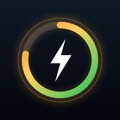
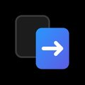
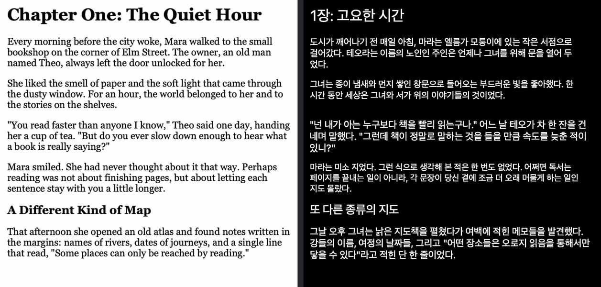
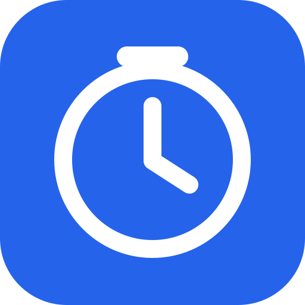

웹진 · 미국 주식
시계 · 스탠바이
Long Time, Easy Life

노트 · 메모
Skyblue Note



충전 · 시계
배터리 라이프
사진 · 액자
포토 타임
사진 · 편집
LongLong (롱롱)
문서 · PDF
Any to PDF

파일 · 변환
Ez Converter
문서 · 스캔
ezScan
모든 전자책 뷰어와 파일 번역
ReadTrans
Kindle, Apple Books처럼 보던 전자책 뷰어를 그대로 둔 채, 지금 보는 쪽을 옆 창에 번역해 보여 주는 컴퓨터 앱입니다. 원문 쪽의 단 나눔과 제목 크기, 인용 모양을 닮게 그리고, 다음 쪽은 미리 번역해 두어 넘기는 즉시 읽힙니다. PDF와 그림 파일을 열어 왼쪽 원문, 오른쪽 번역으로 볼 수도 있습니다. 기본 번역은 컴퓨터 안에서 돌아 밖으로 나가지 않고, 원하면 내 AI 키로 더 자연스럽게 번역합니다.

Mac 곧 공개
Windows 준비 중
11개 언어 · 무료 체험 · 구독 있음

웹 · 파일 전송
초간단 파일공유 send.ezlong.com
열기 설치 없이
회원가입 없음 · 1분 뒤 삭제
다음 앱을 만들고 있습니다. 나오면 이 자리에 먼저 올립니다.